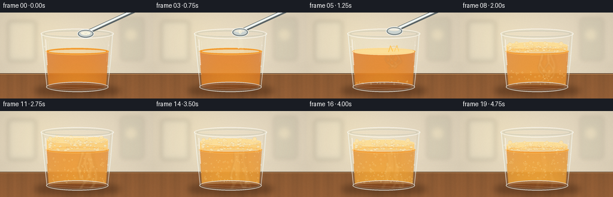
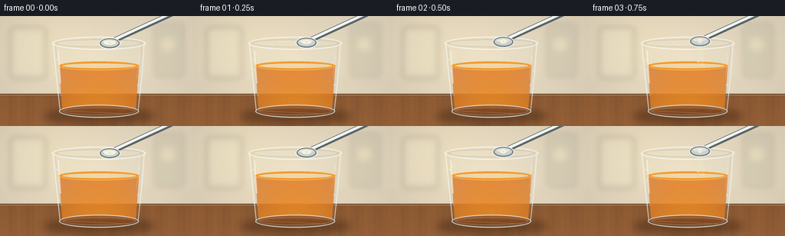

CODING AGENTS AS PIXEL WORLD MODELS
traex/GPT-5.6-Sol · phygen_150
点击播放 · 原生 RGB 像素
逐轮保存的候选
回放视频、检查图与代码变化。
每份候选均可单独播放。实际图片检查记录在下方工具轨迹中。
候选 01播放与检查图
点击播放 · 原生 RGB 像素


展开代码变化
--- 上一保存版本
+++ 本次保存版本
@@ -0,0 +1,312 @@
+from pathlib import Path
+import math
+import numpy as np
+from PIL import Image, ImageDraw, ImageFilter
+import artifact_io
+
+# Deterministic, supersampled 2-D physical illustration.
+W, H, N = 256, 144, 20
+S = 4
+SW, SH = W*S, H*S
+rng = np.random.default_rng(150)
+
+def box(b): return tuple(int(round(v*S)) for v in b)
+def pts(p): return [(int(round(x*S)), int(round(y*S))) for x,y in p]
+def ell(d, b, fill, outline=None, width=1):
+ d.ellipse(box(b), fill=fill, outline=outline, width=max(1,int(width*S)))
+def line(d, p, fill, width=1, joint='curve'):
+ d.line(pts(p), fill=fill, width=max(1,int(width*S)), joint=joint)
+def poly(d, p, fill): d.polygon(pts(p), fill=fill)
+
+def rounded(d,b,r,fill,outline=None,width=1):
+ d.rounded_rectangle(box(b), radius=int(r*S), fill=fill, outline=outline, width=max(1,int(width*S)))
+
+def background():
+ yy, xx = np.mgrid[0:SH,0:SW] / S
+ # softly lit cream kitchen backdrop
+ vign = np.sqrt(((xx-130)/180)**2 + ((yy-60)/115)**2)
+ wall = np.zeros((SH,SW,3),dtype=np.float32)
+ wall[...,0] = 238 - 28*vign + 7*np.exp(-((xx-62)**2+(yy-35)**2)/3400)
+ wall[...,1] = 225 - 27*vign + 6*np.exp(-((xx-62)**2+(yy-35)**2)/3400)
+ wall[...,2] = 199 - 23*vign
+ # counter: wood, with fine deterministic grain
+ counter = yy >= 102
+ grain = 3.2*np.sin(xx*.22 + np.sin(xx*.035)*3) + 1.4*np.sin(xx*.83)
+ wall[...,0][counter] = (138 + grain[counter] + (yy[counter]-102)*.20)
+ wall[...,1][counter] = (89 + grain[counter]*.55 + (yy[counter]-102)*.12)
+ wall[...,2][counter] = (51 + grain[counter]*.25 + (yy[counter]-102)*.08)
+ wall = np.clip(wall,0,255).astype(np.uint8)
+ im = Image.fromarray(wall,'RGB').convert('RGBA')
+ # out-of-focus kitchen forms, deliberately subtle
+ ov = Image.new('RGBA',(SW,SH),(0,0,0,0)); d=ImageDraw.Draw(ov)
+ rounded(d,(13,14,60,82),5,(183,189,169,42))
+ rounded(d,(18,19,54,76),3,(251,244,216,38))
+ rounded(d,(201,9,240,80),5,(132,142,121,34))
+ ell(d,(209,27,229,47),(251,240,188,45))
+ # tile lines and backsplash seam
+ line(d,[(0,87),(256,87)],(128,107,78,32),.7)
+ line(d,[(63,0),(63,87)],(128,115,94,18),.6)
+ line(d,[(194,0),(194,87)],(128,115,94,18),.6)
+ ov=ov.filter(ImageFilter.GaussianBlur(3.6*S))
+ im=Image.alpha_composite(im,ov)
+ # sharp counter edge
+ d=ImageDraw.Draw(im)
+ line(d,[(0,102),(256,102)],(80,52,35,130),1)
+ line(d,[(0,103),(256,103)],(238,187,119,50),.55)
+ return im
+
+BASE=background()
+# stable bubble identities: start, x, radius, speed, phase
+bubbles=[]
+for i in range(125):
+ start=rng.uniform(4.0,17.0)
+ bubbles.append((start,rng.uniform(84,176),rng.uniform(.55,2.05),rng.uniform(3.0,6.8),rng.uniform(0,6.28)))
+# persistent foam cell placement in normalized cup coordinates
+foam_cells=[]
+for i in range(105):
+ foam_cells.append((rng.uniform(80,180),rng.uniform(0,1),rng.uniform(.8,3.15),rng.uniform(0,6.28)))
+# powder grains with stable paths
+powders=[]
+for i in range(48):
+ powders.append((rng.uniform(-4,4),rng.uniform(0,1),rng.uniform(.35,1.0),rng.uniform(-.5,.5)))
+
+def cup_mask(liquid_top=65):
+ m=Image.new('L',(SW,SH),0); d=ImageDraw.Draw(m)
+ # interior is narrower than glass envelope
+ poly(d,[(75,38),(183,38),(177,123),(81,123)],255)
+ ell(d,(81,116,177,130),255)
+ return m
+
+INTERIOR=cup_mask()
+
+def draw_shadow(im):
+ sh=Image.new('RGBA',(SW,SH),(0,0,0,0)); d=ImageDraw.Draw(sh)
+ ell(d,(57,121,202,141),(40,19,8,92))
+ ell(d,(84,126,183,137),(22,12,8,85))
+ sh=sh.filter(ImageFilter.GaussianBlur(5*S))
+ im.alpha_composite(sh)
+
+def liquid_layer(frame, foam_top, react):
+ # Liquid body clipped to cup interior, rich orange becoming lighter/cloudier.
+ y,x=np.mgrid[0:SH,0:SW]/S
+ mask_arr=np.array(INTERIOR,dtype=np.float32)/255
+ top=65.0
+ body=(y>=top) & (y<=128)
+ # orange juice depth/illumination and post-reaction clouding
+ cloudy=max(0,min(1,(frame-5)/11))
+ edge=((x-129)/55)**2
+ r=226 + 8*(y-top)/65 - 13*edge + cloudy*7
+ g=115 + 22*(y-top)/65 - 13*edge + cloudy*27
+ b=20 + 8*(y-top)/65 + cloudy*13
+ a=(211 + 18*(y-top)/65 - 28*edge)*mask_arr*body
+ arr=np.dstack([r,g,b,a]).clip(0,255).astype(np.uint8)
+ layer=Image.fromarray(arr,'RGBA')
+ d=ImageDraw.Draw(layer)
+ # dark refraction at base, and luminous top surface
+ ell(d,(81,116,177,130),(185,76,8,80))
+ ell(d,(76,59,182,71),(244,143,25,235),(255,188,62,180),.7)
+ ell(d,(82,62,177,68),(255,176,45,52))
+ return layer
+
+def draw_swirl(im, frame, react):
+ if frame < 4: return
+ ov=Image.new('RGBA',(SW,SH),(0,0,0,0)); d=ImageDraw.Draw(ov)
+ progress=min(1,(frame-4)/9)
+ fade=.35+.65*min(1,(19-frame)/8) if frame>11 else 1
+ # suspended pale reaction plumes, branching downward from impact
+ for k in range(5):
+ phase=k*1.35
+ x0=144 + 8*math.sin(frame*.34+phase)
+ depth=18+progress*(36+8*k)
+ width=1.3+progress*(2.8+k*.45)
+ path=[]
+ for j in range(12):
+ q=j/11
+ yy=68+depth*q
+ xx=x0 + (8+2*k)*math.sin(q*4.3+phase+frame*.12)*q
+ path.append((xx,yy))
+ line(d,path,(255,238,177,int((52-5*k)*fade)),width)
+ # faint shadow side produces dimensional curling
+ path2=[(x+width*1.2,y) for x,y in path]
+ line(d,path2,(143,77,15,int(18*fade)),max(.6,width*.35))
+ ov=ov.filter(ImageFilter.GaussianBlur(1.0*S))
+ ov.putalpha(Image.composite(ov.getchannel('A'),Image.new('L',(SW,SH),0),INTERIOR))
+ im.alpha_composite(ov)
+
+def foam_parameters(frame):
+ # soda reaches drink around frame 4; timelapse reaction peaks 10-12 then settles
+ if frame < 4: return 65,0
+ if frame <= 11:
+ e=(frame-4)/7
+ smooth=e*e*(3-2*e)
+ return 65-18*smooth, smooth
+ # foam slowly subsides while a bubbly head remains
+ q=(frame-11)/8
+ return 47+9*q, 1-.34*q
+
+def draw_foam(im, frame, foam_top, strength):
+ if strength<=0: return
+ ov=Image.new('RGBA',(SW,SH),(0,0,0,0)); d=ImageDraw.Draw(ov)
+ # creamy orange foam body
+ poly(d,[(77,65),(181,65),(179,foam_top+4),(176,122),(82,122),(79,foam_top+4)],(248,168,62,int(75*strength)))
+ # actual foam layer, capped by elliptical top
+ poly(d,[(78,65),(180,65),(180,foam_top),(78,foam_top)],(255,205,112,225))
+ ell(d,(78,foam_top-5,180,foam_top+7),(255,221,145,242),(255,238,194,205),.65)
+ # cell network: cells fill between foam top and original surface
+ span=max(4,65-foam_top)
+ for idx,(cx,q,r,ph) in enumerate(foam_cells):
+ cy=foam_top+2+q*max(2,span-1)
+ # bulge foam cells toward center; restrained jitter is continuous
+ cx2=cx+math.sin(frame*.33+ph)*.7
+ rr=r*(.75+.25*strength)
+ if cy < 65.8 and 79+rr < cx2 < 179-rr:
+ fill=(255,229,166,195)
+ edge=(231,154,47,180)
+ ell(d,(cx2-rr,cy-rr*.55,cx2+rr,cy+rr*.55),fill,edge,.48)
+ if rr>1.8: ell(d,(cx2-rr*.35,cy-rr*.32,cx2+rr*.12,cy-rr*.08),(255,250,220,140))
+ # irregular froth crown at peak
+ if frame>=7:
+ count=12
+ for j in range(count):
+ cx=84+j*8.0+3*math.sin(j*2.1)
+ rr=2.3+1.0*math.sin(j*1.77+1)
+ cy=foam_top-2.1+1.4*math.sin(j*2.4+frame*.22)
+ ell(d,(cx-rr,cy-rr,cx+rr,cy+rr),(255,227,163,232),(238,169,66,170),.45)
+ # clip all foam to inner cup silhouette
+ alpha=np.array(ov.getchannel('A'))
+ alpha=np.minimum(alpha,np.array(INTERIOR))
+ ov.putalpha(Image.fromarray(alpha.astype(np.uint8)))
+ im.alpha_composite(ov)
+
+def draw_rising_bubbles(im, frame):
+ if frame < 4: return
+ ov=Image.new('RGBA',(SW,SH),(0,0,0,0)); d=ImageDraw.Draw(ov)
+ for start,cx,r,speed,phase in bubbles:
+ age=frame-start
+ if age<0 or age>9.8: continue
+ cy=120-speed*age
+ if cy<65: continue
+ xx=cx+math.sin(age*.8+phase)*1.7
+ # perspective: smaller bubbles lower down, bright crescent edge
+ rr=r*(.65+.35*(120-cy)/55)
+ ell(d,(xx-rr,cy-rr,xx+rr,cy+rr),(255,192,64,24),(255,239,175,170),.42)
+ ell(d,(xx-rr*.43,cy-rr*.55,xx-rr*.08,cy-rr*.2),(255,255,230,150))
+ alpha=np.minimum(np.array(ov.getchannel('A')),np.array(INTERIOR))
+ ov.putalpha(Image.fromarray(alpha.astype(np.uint8)))
+ im.alpha_composite(ov)
+
+def draw_glass(im, frame):
+ ov=Image.new('RGBA',(SW,SH),(0,0,0,0)); d=ImageDraw.Draw(ov)
+ # outer glass walls and heavy base
+ # faint transparent wall tint
+ poly(d,[(70,35),(188,35),(180,126),(78,126)],(220,239,236,13))
+ # rim: layered ellipses make clear thick glass
+ ell(d,(68,27,190,44),(237,248,246,20),(255,255,251,210),1.15)
+ ell(d,(72,30,186,41),(102,105,92,26),(180,204,200,150),.7)
+ ell(d,(75,32,183,39),(248,255,252,12),(255,255,255,96),.5)
+ # side boundaries with dark outer refraction and bright inner streaks
+ line(d,[(69,35),(73,76),(78,123)],(244,252,250,190),1.05)
+ line(d,[(188,35),(185,77),(180,123)],(242,252,250,180),1.05)
+ line(d,[(72,39),(76,83),(81,120)],(81,104,101,48),.65)
+ line(d,[(185,39),(181,84),(177,120)],(74,95,93,42),.65)
+ # curved thick base
+ ell(d,(77,116,181,133),(207,230,226,24),(247,255,253,190),1.25)
+ ell(d,(82,120,176,129),(85,74,48,23),(190,220,216,92),.65)
+ # specular highlights
+ line(d,[(76,45),(79,88)],(255,255,255,155),1.3)
+ line(d,[(80,48),(82,67)],(255,255,255,78),.7)
+ line(d,[(181,48),(178,82)],(255,255,255,80),.65)
+ line(d,[(82,124),(169,128)],(255,255,255,68),.8)
+ # condensation beads, mostly fixed
+ drops=[(74.5,57,1.0),(76.5,71,.7),(181.7,55,.8),(179.8,90,1.15),(80,103,.65),(184,72,.55)]
+ for x,y,r in drops:
+ ell(d,(x-r,y-r*1.3,x+r,y+r*1.3),(244,255,254,48),(255,255,255,135),.35)
+ im.alpha_composite(ov)
+
+def draw_spoon_and_powder(im, frame):
+ if frame>6: return
+ ov=Image.new('RGBA',(SW,SH),(0,0,0,0)); d=ImageDraw.Draw(ov)
+ # spoon tilts and retreats after dumping
+ if frame<=4:
+ u=frame/4
+ else: u=1+(frame-4)*.35
+ bowlx=143+u*2.8; bowly=35-u*3.4
+ angle=-24-u*8
+ # handle as a polished taper extending upper-right
+ ex=226+u*7; ey=-4-u*5
+ line(d,[(bowlx+7,bowly-4),(ex,ey)],(91,101,103,255),7.2)
+ line(d,[(bowlx+7,bowly-5),(ex,ey-1)],(239,246,244,245),3.9)
+ line(d,[(bowlx+9,bowly-4),(ex,ey)],(255,255,255,165),.8)
+ # spoon bowl, angled ellipse/polygon appearance
+ ell(d,(bowlx-14,bowly-7,bowlx+14,bowly+8),(117,128,129,255),(247,251,248,255),1)
+ ell(d,(bowlx-11.5,bowly-5,bowlx+11.5,bowly+5.5),(202,211,209,255),(71,80,81,150),.45)
+ ell(d,(bowlx-9,bowly-3.7,bowlx+8,bowly+.5),(248,251,249,100))
+ # mound decreases as it is tipped
+ mound=max(0,1-frame/4.5)
+ if mound>0:
+ ell(d,(bowlx-8*mound,bowly-3.2,bowlx+8*mound,bowly+2.7),(248,245,224,255),(215,207,184,180),.45)
+ # granular texture
+ for j in range(11):
+ a=j*2.399
+ rr=(j%4)/4*6*mound
+ x=bowlx+math.cos(a)*rr; y=bowly+math.sin(a)*rr*.34
+ ell(d,(x-.45,y-.35,x+.45,y+.35),(225,220,201,210))
+ im.alpha_composite(ov)
+
+ # powder stream begins frame 2 and stops after frame 5
+ if 2<=frame<=5:
+ pd=Image.new('RGBA',(SW,SH),(0,0,0,0)); q=ImageDraw.Draw(pd)
+ stage=(frame-2)/3
+ for dx,t,r,drift in powders:
+ # stream length grows, then is almost complete
+ release=t
+ fall=max(0,min(1,(stage*1.45-release*.55)))
+ if fall<=0: continue
+ sy=40
+ yy=sy + fall*29 + 27*fall*fall
+ xx=145+dx*(.25+fall)+drift*fall*7
+ if yy>68: continue
+ ell(q,(xx-r,yy-r,xx+r,yy+r),(250,246,224,235),(217,209,184,100),.25)
+ # fine connecting dust veil
+ if frame in (3,4):
+ poly(q,[(141,39),(148,39),(151,65),(145,67)],(250,245,217,32))
+ im.alpha_composite(pd)
+
+def draw_splash(im, frame):
+ if frame not in (4,5,6,7): return
+ ov=Image.new('RGBA',(SW,SH),(0,0,0,0)); d=ImageDraw.Draw(ov)
+ e=(frame-4)/3
+ # small impact crown and droplets (cup never unrealistically overflows)
+ line(d,[(137,66),(140,59-4*math.sin(e*math.pi)),(144,65)],(255,188,59,210),1.4)
+ line(d,[(147,65),(151,57-3*math.sin(e*math.pi)),(154,65)],(255,197,72,190),1.1)
+ for j in range(6):
+ ang=-2.6+j*.34
+ x=146+math.cos(ang)*(5+e*8)
+ y=62+math.sin(ang)*(4+e*7)+e*e*5
+ r=.55+(j%2)*.25
+ ell(d,(x-r,y-r,x+r,y+r),(250,169,42,220),(255,227,148,160),.3)
+ im.alpha_composite(ov)
+
+def render(frame):
+ im=BASE.copy()
+ draw_shadow(im)
+ foam_top,strength=foam_parameters(frame)
+ im.alpha_composite(liquid_layer(frame,foam_top,strength))
+ draw_swirl(im,frame,strength)
+ draw_rising_bubbles(im,frame)
+ draw_foam(im,frame,foam_top,strength)
+ draw_splash(im,frame)
+ draw_glass(im,frame)
+ draw_spoon_and_powder(im,frame)
+ # gentle photographic finishing: supersample and tiny sensor grain
+ out=im.convert('RGB').resize((W,H),Image.Resampling.LANCZOS)
+ arr=np.asarray(out).astype(np.int16)
+ # static-like tiny grain changes per timelapse frame, but does not obscure detail
+ local=np.random.default_rng(1000+frame)
+ grain=local.normal(0,.55,(H,W,1))
+ arr=np.clip(arr+grain,0,255).astype(np.uint8)
+ return arr
+
+frames=np.stack([render(i) for i in range(N)],axis=0)
+assert frames.shape==(20,144,256,3) and frames.dtype==np.uint8
+artifact_io.save(frames,Path(__file__).resolve().parent)
可观测工具轨迹
实际执行的命令与返回图片。
命令 1exit 0
/bin/bash -lc "cat prompt.txt && printf '\\n--- GENERATION_RULES ---\\n' && cat GENERATION_RULES.md && printf '\\n--- TASK_SPEC ---\\n' && cat task_spec.json"
命令 2exit 0
/bin/bash -lc "find . -maxdepth 3 -type f -printf '%p\\n' | sort && printf '\\n--- executables ---\\n' && command -v ffmpeg || true && command -v blender || true && command -v python3 || true"
命令 3exit 0
/bin/bash -lc 'cat artifact_io.py'
命令 4exit 2
/bin/bash -lc "cat > generate.py <<'PY'
from pathlib import Path
import math
import numpy as np
from PIL import Image, ImageDraw, ImageFilter
import artifact_io
# Deterministic, supersampled 2-D physical illustration.
W, H, N = 256, 144, 20
S = 4
SW, SH = W*S, H*S
rng = np.random.default_rng(150)
def box(b): return tuple(int(round(v*S)) for v in b)
def pts(p): return [(int(round(x*S)), int(round(y*S))) for x,y in p]
def ell(d, b, fill, outline=None, width=1):
d.ellipse(box(b), fill=fill, outline=outline, width=max(1,int(width*S)))
def line(d, p, fill, width=1, joint='curve'):
d.line(pts(p), fill=fill, width=max(1,int(width*S)), joint=joint)
def poly(d, p, fill): d.polygon(pts(p), fill=fill)
def rounded(d,b,r,fill,outline=None,width=1):
d.rounded_rectangle(box(b), radius=int(r*S), fill=fill, outline=outline, width=max(1,int(width*S)))
def background():
yy, xx = np.mgrid[0:SH,0:SW] / S
# softly lit cream kitchen backdrop
vign = np.sqrt(((xx-130)/180)**2 + ((yy-60)/115)**2)
wall = np.zeros((SH,SW,3),dtype=np.float32)
wall[...,0] = 238 - 28*vign + 7*np.exp(-((xx-62)**2+(yy-35)**2)/3400)
wall[...,1] = 225 - 27*vign + 6*np.exp(-((xx-62)**2+(yy-35)**2)/3400)
wall[...,2] = 199 - 23*vign
# counter: wood, with fine deterministic grain
counter = yy >= 102
grain = 3.2*np.sin(xx*.22 + np.sin(xx*.035)*3) + 1.4*np.sin(xx*.83)
wall[...,0][counter] = (138 + grain + (yy[counter]-102)*.20)
wall[...,1][counter] = (89 + grain*.55 + (yy[counter]-102)*.12)
wall[...,2][counter] = (51 + grain*.25 + (yy[counter]-102)*.08)
wall = np.clip(wall,0,255).astype(np.uint8)
im = Image.fromarray(wall,'RGB').convert('RGBA')
# out-of-focus kitchen forms, deliberately subtle
ov = Image.new('RGBA',(SW,SH),(0,0,0,0)); d=ImageDraw.Draw(ov)
rounded(d,(13,14,60,82),5,(183,189,169,42))
rounded(d,(18,19,54,76),3,(251,244,216,38))
rounded(d,(201,9,240,80),5,(132,142,121,34))
ell(d,(209,27,229,47),(251,240,188,45))
# tile lines and backsplash seam
line(d,[(0,87),(256,87)],(128,107,78,32),.7)
line(d,[(63,0),(63,87)],(128,115,94,18),.6)
line(d,[(194,0),(194,87)],(128,115,94,18),.6)
ov=ov.filter(ImageFilter.GaussianBlur(3.6*S))
im=Image.alpha_composite(im,ov)
# sharp counter edge
d=ImageDraw.Draw(im)
line(d,[(0,102),(256,102)],(80,52,35,130),1)
line(d,[(0,103),(256,103)],(238,187,119,50),.55)
return im
BASE=background()
# stable bubble identities: start, x, radius, speed, phase
bubbles=[]
for i in range(125):
start=rng.uniform(4.0,17.0)
bubbles.append((start,rng.uniform(84,176),rng.uniform(.55,2.05),rng.uniform(3.0,6.8),rng.uniform(0,6.28)))
# persistent foam cell placement in normalized cup coordinates
foam_cells=[]
for i in range(105):
foam_cells.append((rng.uniform(80,180),rng.uniform(0,1),rng.uniform(.8,3.15),rng.uniform(0,6.28)))
# powder grains with stable paths
powders=[]
for i in range(48):
powders.append((rng.uniform(-4,4),rng.uniform(0,1),rng.uniform(.35,1.0),rng.uniform(-.5,.5)))
def cup_mask(liquid_top=65):
m=Image.new('L',(SW,SH),0); d=ImageDraw.Draw(m)
# interior is narrower than glass envelope
poly(d,[(75,38),(183,38),(177,123),(81,123)],255)
ell(d,(81,116,177,130),255)
return m
INTERIOR=cup_mask()
def draw_shadow(im):
sh=Image.new('RGBA',(SW,SH),(0,0,0,0)); d=ImageDraw.Draw(sh)
ell(d,(57,121,202,141),(40,19,8,92))
ell(d,(84,126,183,137),(22,12,8,85))
sh=sh.filter(ImageFilter.GaussianBlur(5*S))
im.alpha_composite(sh)
def liquid_layer(frame, foam_top, react):
# Liquid body clipped to cup interior, rich orange becoming lighter/cloudier.
y,x=np.mgrid[0:SH,0:SW]/S
mask_arr=np.array(INTERIOR,dtype=np.float32)/255
top=65.0
body=(y>=top) & (y<=128)
# orange juice depth/illumination and post-reaction clouding
cloudy=max(0,min(1,(frame-5)/11))
edge=((x-129)/55)**2
r=226 + 8*(y-top)/65 - 13*edge + cloudy*7
g=115 + 22*(y-top)/65 - 13*edge + cloudy*27
b=20 + 8*(y-top)/65 + cloudy*13
a=(211 + 18*(y-top)/65 - 28*edge)*mask_arr*body
arr=np.dstack([r,g,b,a]).clip(0,255).astype(np.uint8)
layer=Image.fromarray(arr,'RGBA')
d=ImageDraw.Draw(layer)
# dark refraction at base, and luminous top surface
ell(d,(81,116,177,130),(185,76,8,80))
ell(d,(76,59,182,71),(244,143,25,235),(255,188,62,180),.7)
ell(d,(82,62,177,68),(255,176,45,52))
return layer
def draw_swirl(im, frame, react):
if frame < 4: return
ov=Image.new('RGBA',(SW,SH),(0,0,0,0)); d=ImageDraw.Draw(ov)
progress=min(1,(frame-4)/9)
fade=.35+.65*min(1,(19-frame)/8) if frame>11 else 1
# suspended pale reaction plumes, branching downward from impact
for k in range(5):
phase=k*1.35
x0=144 + 8*math.sin(frame*.34+phase)
depth=18+progress*(36+8*k)
width=1.3+progress*(2.8+k*.45)
path=[]
for j in range(12):
q=j/11
yy=68+depth*q
xx=x0 + (8+2*k)*math.sin(q*4.3+phase+frame*.12)*q
path.append((xx,yy))
line(d,path,(255,238,177,int((52-5*k)*fade)),width)
# faint shadow side produces dimensional curling
path2=[(x+width*1.2,y) for x,y in path]
line(d,path2,(143,77,15,int(18*fade)),max(.6,width*.35))
ov=ov.filter(ImageFilter.GaussianBlur(1.0*S))
ov.putalpha(Image.composite(ov.getchannel('A'),Image.new('L',(SW,SH),0),INTERIOR))
im.alpha_composite(ov)
def foam_parameters(frame):
# soda reaches drink around frame 4; timelapse reaction peaks 10-12 then settles
if frame < 4: return 65,0
if frame <= 11:
e=(frame-4)/7
smooth=e*e*(3-2*e)
return 65-18*smooth, smooth
# foam slowly subsides while a bubbly head remains
q=(frame-11)/8
return 47+9*q, 1-.34*q
def draw_foam(im, frame, foam_top, strength):
if strength<=0: return
ov=Image.new('RGBA',(SW,SH),(0,0,0,0)); d=ImageDraw.Draw(ov)
# creamy orange foam body
poly(d,[(77,65),(181,65),(179,foam_top+4),(176,122),(82,122),(79,foam_top+4)],(248,168,62,int(75*strength)))
# actual foam layer, capped by elliptical top
poly(d,[(78,65),(180,65),(180,foam_top),(78,foam_top)],(255,205,112,225))
ell(d,(78,foam_top-5,180,foam_top+7),(255,221,145,242),(255,238,194,205),.65)
# cell network: cells fill between foam top and original surface
span=max(4,65-foam_top)
for idx,(cx,q,r,ph) in enumerate(foam_cells):
cy=foam_top+2+q*max(2,span-1)
# bulge foam cells toward center; restrained jitter is continuous
cx2=cx+math.sin(frame*.33+ph)*.7
rr=r*(.75+.25*strength)
if cy < 65.8 and 79+rr < cx2 < 179-rr:
fill=(255,229,166,195)
edge=(231,154,47,180)
ell(d,(cx2-rr,cy-rr*.55,cx2+rr,cy+rr*.55),fill,edge,.48)
if rr>1.8: ell(d,(cx2-rr*.35,cy-rr*.32,cx2+rr*.12,cy-rr*.08),(255,250,220,140))
# irregular froth crown at peak
if frame>=7:
count=12
for j in range(count):
cx=84+j*8.0+3*math.sin(j*2.1)
rr=2.3+1.0*math.sin(j*1.77+1)
cy=foam_top-2.1+1.4*math.sin(j*2.4+frame*.22)
ell(d,(cx-rr,cy-rr,cx+rr,cy+rr),(255,227,163,232),(238,169,66,170),.45)
# clip all foam to inner cup silhouette
alpha=np.array(ov.getchannel('A'))
alpha=np.minimum(alpha,np.array(INTERIOR))
ov.putalpha(Image.fromarray(alpha.astype(np.uint8)))
im.alpha_composite(ov)
def draw_rising_bubbles(im, frame):
if frame < 4: return
ov=Image.new('RGBA',(SW,SH),(0,0,0,0)); d=ImageDraw.Draw(ov)
for start,cx,r,speed,phase in bubbles:
age=frame-start
if age<0 or age>9.8: continue
cy=120-speed*age
if cy<65: continue
xx=cx+math.sin(age*.8+phase)*1.7
# perspective: smaller bubbles lower down, bright crescent edge
rr=r*(.65+.35*(120-cy)/55)
ell(d,(xx-rr,cy-rr,xx+rr,cy+rr),(255,192,64,24),(255,239,175,170),.42)
ell(d,(xx-rr*.43,cy-rr*.55,xx-rr*.08,cy-rr*.2),(255,255,230,150))
alpha=np.minimum(np.array(ov.getchannel('A')),np.array(INTERIOR))
ov.putalpha(Image.fromarray(alpha.astype(np.uint8)))
im.alpha_composite(ov)
def draw_glass(im, frame):
ov=Image.new('RGBA',(SW,SH),(0,0,0,0)); d=ImageDraw.Draw(ov)
# outer glass walls and heavy base
# faint transparent wall tint
poly(d,[(70,35),(188,35),(180,126),(78,126)],(220,239,236,13))
# rim: layered ellipses make clear thick glass
ell(d,(68,27,190,44),(237,248,246,20),(255,255,251,210),1.15)
ell(d,(72,30,186,41),(102,105,92,26),(180,204,200,150),.7)
ell(d,(75,32,183,39),(248,255,252,12),(255,255,255,96),.5)
# side boundaries with dark outer refraction and bright inner streaks
line(d,[(69,35),(73,76),(78,123)],(244,252,250,190),1.05)
line(d,[(188,35),(185,77),(180,123)],(242,252,250,180),1.05)
line(d,[(72,39),(76,83),(81,120)],(81,104,101,48),.65)
line(d,[(185,39),(181,84),(177,120)],(74,95,93,42),.65)
# curved thick base
ell(d,(77,116,181,133),(207,230,226,24),(247,255,253,190),1.25)
ell(d,(82,120,176,129),(85,74,48,23),(190,220,216,92),.65)
# specular highlights
line(d,[(76,45),(79,88)],(255,255,255,155),1.3)
line(d,[(80,48),(82,67)],(255,255,255,78),.7)
line(d,[(181,48),(178,82)],(255,255,255,80),.65)
line(d,[(82,124),(169,128)],(255,255,255,68),.8)
# condensation beads, mostly fixed
drops=[(74.5,57,1.0),(76.5,71,.7),(181.7,55,.8),(179.8,90,1.15),(80,103,.65),(184,72,.55)]
for x,y,r in drops:
ell(d,(x-r,y-r*1.3,x+r,y+r*1.3),(244,255,254,48),(255,255,255,135),.35)
im.alpha_composite(ov)
def draw_spoon_and_powder(im, frame):
if frame>6: return
ov=Image.new('RGBA',(SW,SH),(0,0,0,0)); d=ImageDraw.Draw(ov)
# spoon tilts and retreats after dumping
if frame<=4:
u=frame/4
else: u=1+(frame-4)*.35
bowlx=143+u*2.8; bowly=35-u*3.4
angle=-24-u*8
# handle as a polished taper extending upper-right
ex=226+u*7; ey=-4-u*5
line(d,[(bowlx+7,bowly-4),(ex,ey)],(91,101,103,255),7.2)
line(d,[(bowlx+7,bowly-5),(ex,ey-1)],(239,246,244,245),3.9)
line(d,[(bowlx+9,bowly-4),(ex,ey)],(255,255,255,165),.8)
# spoon bowl, angled ellipse/polygon appearance
ell(d,(bowlx-14,bowly-7,bowlx+14,bowly+8),(117,128,129,255),(247,251,248,255),1)
ell(d,(bowlx-11.5,bowly-5,bowlx+11.5,bowly+5.5),(202,211,209,255),(71,80,81,150),.45)
ell(d,(bowlx-9,bowly-3.7,bowlx+8,bowly+.5),(248,251,249,100))
# mound decreases as it is tipped
mound=max(0,1-frame/4.5)
if mound>0:
ell(d,(bowlx-8*mound,bowly-3.2,bowlx+8*mound,bowly+2.7),(248,245,224,255),(215,207,184,180),.45)
# granular texture
for j in range(11):
a=j*2.399
rr=(j%4)/4*6*mound
x=bowlx+math.cos(a)*rr; y=bowly+math.sin(a)*rr*.34
ell(d,(x-.45,y-.35,x+.45,y+.35),(225,220,201,210))
im.alpha_composite(ov)
# powder stream begins frame 2 and stops after frame 5
if 2<=frame<=5:
pd=Image.new('RGBA',(SW,SH),(0,0,0,0)); q=ImageDraw.Draw(pd)
stage=(frame-2)/3
for dx,t,r,drift in powders:
# stream length grows, then is almost complete
release=t
fall=max(0,min(1,(stage*1.45-release*.55)))
if fall<=0: continue
sy=40
yy=sy + fall*29 + 27*fall*fall
xx=145+dx*(.25+fall)+drift*fall*7
if yy>68: continue
ell(q,(xx-r,yy-r,xx+r,yy+r),(250,246,224,235),(217,209,184,100),.25)
# fine connecting dust veil
if frame in (3,4):
poly(q,[(141,39),(148,39),(151,65),(145,67)],(250,245,217,32))
im.alpha_composite(pd)
def draw_splash(im, frame):
if frame not in (4,5,6,7): return
ov=Image.new('RGBA',(SW,SH),(0,0,0,0)); d=ImageDraw.Draw(ov)
e=(frame-4)/3
# small impact crown and droplets (cup never unrealistically overflows)
line(d,[(137,66),(140,59-4*math.sin(e*math.pi)),(144,65)],(255,188,59,210),1.4)
line(d,[(147,65),(151,57-3*math.sin(e*math.pi)),(154,65)],(255,197,72,190),1.1)
for j in range(6):
ang=-2.6+j*.34
x=146+math.cos(ang)*(5+e*8)
y=62+math.sin(ang)*(4+e*7)+e*e*5
r=.55+(j%2)*.25
ell(d,(x-r,y-r,x+r,y+r),(250,169,42,220),(255,227,148,160),.3)
im.alpha_composite(ov)
def render(frame):
im=BASE.copy()
draw_shadow(im)
foam_top,strength=foam_parameters(frame)
im.alpha_composite(liquid_layer(frame,foam_top,strength))
draw_swirl(im,frame,strength)
draw_rising_bubbles(im,frame)
draw_foam(im,frame,foam_top,strength)
draw_splash(im,frame)
draw_glass(im,frame)
draw_spoon_and_powder(im,frame)
# gentle photographic finishing: supersample and tiny sensor grain
out=im.convert('RGB').resize((W,H),Image.Resampling.LANCZOS)
arr=np.asarray(out).astype(np.int16)
# static-like tiny grain changes per timelapse frame, but does not obscure detail
local=np.random.default_rng(1000+frame)
grain=local.normal(0,.55,(H,W,1))
arr=np.clip(arr+grain,0,255).astype(np.uint8)
return arr
frames=np.stack([render(i) for i in range(N)],axis=0)
assert frames.shape==(20,144,256,3) and frames.dtype==np.uint8
artifact_io.save(frames,Path(__file__).resolve().parent)
PY
python3 generate.py
ls -lh pixels.npz index.html inspection.png transition_check.png frames/00.png frames/19.png"命令 5exit 0
/bin/bash -lc "python3 - <<'PY'
p='generate.py'
s=open(p).read()
s=s.replace('(138 + grain + (yy[counter]-102)*.20)', '(138 + grain[counter] + (yy[counter]-102)*.20)')
s=s.replace('(89 + grain*.55 + (yy[counter]-102)*.12)', '(89 + grain[counter]*.55 + (yy[counter]-102)*.12)')
s=s.replace('(51 + grain*.25 + (yy[counter]-102)*.08)', '(51 + grain[counter]*.25 + (yy[counter]-102)*.08)')
open(p,'w').write(s)
PY
python3 generate.py
ls -lh pixels.npz index.html inspection.png transition_check.png frames/00.png frames/19.png"命令 6exit 0
/bin/bash -lc "python3 -m py_compile generate.py artifact_io.py && test -s index.html && test -s pixels.npz && test -s inspection.png && echo 'compile/artifact checks: PASS' && du -sh ."
命令 7exit 0
/bin/bash -lc "python3 - <<'PY'
from pathlib import Path
import json, numpy as np
from PIL import Image
spec=json.load(open('task_spec.json'))
z=np.load('pixels.npz')['pixels']
files=sorted(Path('frames').glob('*.png'))
frames=np.stack([np.asarray(Image.open(p)) for p in files])
print('spec:',spec)
print('frame files:',len(files),files[0].name,files[-1].name)
print('frames:',frames.shape,frames.dtype,'range',int(frames.min()),int(frames.max()))
print('packed tensor:',z.shape,z.dtype)
print('all RGB:',all(Image.open(p).mode=='RGB' for p in files))
print('mean consecutive MAE:',np.abs(np.diff(frames.astype(np.int16),axis=0)).mean(axis=(1,2,3)).round(2).tolist())
print('unique frame hashes:',len({__import__('hashlib').sha256(p.read_bytes()).hexdigest() for p in files}))
for i in [0,3,5,8,11,15,19]:
f=frames[i]; roi=f[28:132,68:190]
print(i,'mean',f.mean(axis=(0,1)).round(1),'cup roi',roi.mean(axis=(0,1)).round(1))
PY"保存候选 1 份；完成命令 7 次；可验证图片返回 0 张。原始 API 响应与完整日志保留在本地。